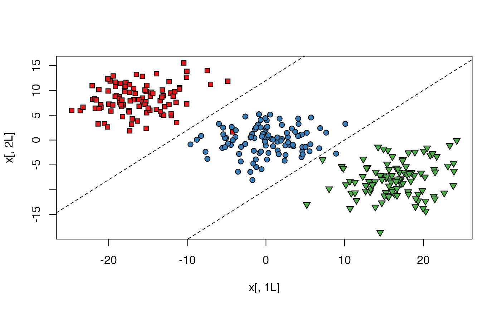
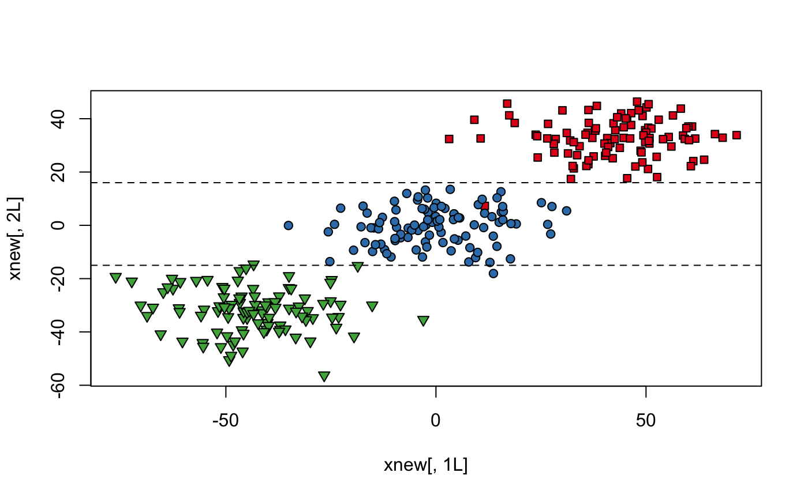

rca performs relevant component analysis (RCA) for the given data.
It takes a data set and a set of positive constraints as arguments
and returns a linear transformation of the data space into better
representation, alternatively, a Mahalanobis metric over the data space.
The new representation is known to be optimal in an information theoretic sense under a constraint of keeping equivalent data points close to each other.
rca(x, chunks, useD = NULL)
| x |
|
|---|---|
| chunks | a vector of size |
| useD | optional. When not given, RCA is done in the
original dimension and |
A list of the RCA results:
B: The RCA suggested Mahalanobis matrix.
Distances between data points x1, x2 should be
computed by (x2 - x1)^T * B * (x2 - x1)
RCA: The RCA suggested transformation of the data.
The data should be transformed by RCA * data
newX: The data after the RCA transformation.
newX = data * RCA
The three returned objects are just different forms of the same output.
If one is interested in a Mahalanobis metric over the original data space,
the first argument is all she/he needs. If a transformation into another
space (where one can use the Euclidean metric) is preferred, the second
returned argument is sufficient. Using A and B are equivalent
in the following sense:
if y1 = A * x1, y2 = A * y2 then
(x2 - x1)^T * B * (x2 - x1) = (y2 - y1)^T * (y2 - y1)
Note that any different sets of instances (chunklets),
e.g. {1, 3, 7} and {4, 6}, might belong to the
same class and might belong to different classes.
Aharon Bar-Hillel, Tomer Hertz, Noam Shental, and Daphna Weinshall (2003). Learning Distance Functions using Equivalence Relations. Proceedings of 20th International Conference on Machine Learning (ICML2003)
library("MASS") # generate synthetic multivariate normal data set.seed(42) k <- 100L # sample size of each class n <- 3L # specify how many classes N <- k * n # total sample size x1 <- mvrnorm(k, mu = c(-16, 8), matrix(c(15, 1, 2, 10), ncol = 2)) x2 <- mvrnorm(k, mu = c(0, 0), matrix(c(15, 1, 2, 10), ncol = 2)) x3 <- mvrnorm(k, mu = c(16, -8), matrix(c(15, 1, 2, 10), ncol = 2)) x <- as.data.frame(rbind(x1, x2, x3)) # predictors y <- gl(n, k) # response # fully labeled data set with 3 classes # need to use a line in 2D to classify plot(x[, 1L], x[, 2L], bg = c("#E41A1C", "#377EB8", "#4DAF4A")[y], pch = rep(c(22, 21, 25), each = k) )abline(a = -10, b = 1, lty = 2)abline(a = 12, b = 1, lty = 2)# generate synthetic chunklets chunks <- vector("list", 300) for (i in 1:100) chunks[[i]] <- sample(1L:100L, 10L) for (i in 101:200) chunks[[i]] <- sample(101L:200L, 10L) for (i in 201:300) chunks[[i]] <- sample(201L:300L, 10L) chks <- x[unlist(chunks), ] # make "chunklet" vector to feed the chunks argument chunksvec <- rep(-1L, nrow(x)) for (i in 1L:length(chunks)) { for (j in 1L:length(chunks[[i]])) { chunksvec[chunks[[i]][j]] <- i } } # relevant component analysis rcs <- rca(x, chunksvec) # learned transformation of the data rcs$RCA#> [,1] [,2] #> [1,] -3.181484 -0.8812647 #> [2,] -1.196200 2.3438640# learned Mahalanobis distance metric rcs$B#> [,1] [,2] #> [1,] 10.898467 1.740125 #> [2,] 1.740125 6.924592# whitening transformation applied to the chunklets chkTransformed <- as.matrix(chks) %*% rcs$RCA # original data after applying RCA transformation # easier to classify - using only horizontal lines xnew <- rcs$newX plot(xnew[, 1L], xnew[, 2L], bg = c("#E41A1C", "#377EB8", "#4DAF4A")[gl(n, k)], pch = c(rep(22, k), rep(21, k), rep(25, k)) )abline(a = -15, b = 0, lty = 2)abline(a = 16, b = 0, lty = 2)